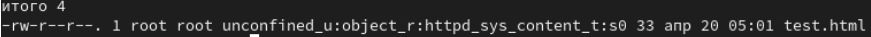
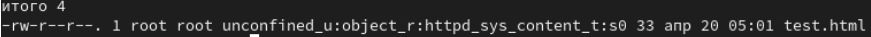
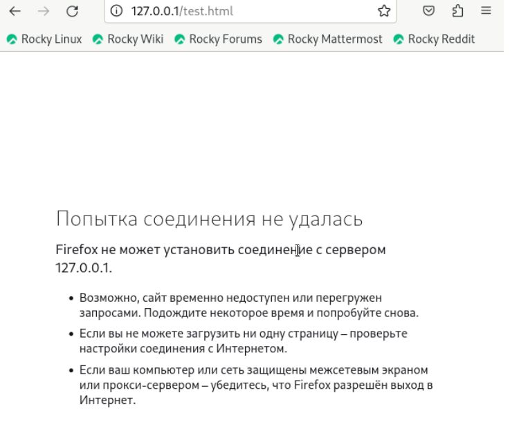
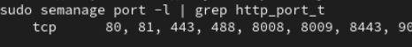

# Выполнение лабораторной работы С
помощью команды
# Выполнение лабораторной работы С
помощью команды ps auxZ | grep httpd нашла веб-сервер
Apache в списке процессов. Его контекст безопасности - httpd_t (рис.
[-@fig:003]).Развить навыки администрирования ОС Linux. Получить первое практическое знакомство с технологией SELinux1. Проверить работу SELinx на практике совместно с веб-сервером Apache.
Вошла в систему под своей учетной записью. Убедилась, что SELinux работает в режиме enforcing политики targeted с помощью команд getenforce и sestatus (рис. [-@fig:001]).
Запускаю сервер apache, далее обращаюсь с помощью браузера к
веб-серверу, запущенному на компьютере, он работает, что видно из вывода
команды service httpd status (рис. [-@fig:002]).
# Выполнение лабораторной работы С
помощью команды ps auxZ | grep httpd нашла веб-сервер
Apache в списке процессов. Его контекст безопасности - httpd_t (рис.
[-@fig:003]).

Просмотрела текущее состояние переключателей SELinux для Apache с
помощью команды sestatus -bigrep httpd (рис. [-@fig:004]).
Просмотрела статистику по политике с помощью команды
seinfo. Множество пользователей - 8, ролей - 39, типов -
5135. (рис. [-@fig:005]).
# Выполнение лабораторной работы Типы
поддиректорий, находящихся в директории /var/www, с помощью
команды ls -lZ /var/www следующие: владелец - root, права
на изменения только у владельца. Файлов в директории нет (рис. [-@fig:006]).

В директории /var/www/html нет файлов. (рис. [-@fig:007]).
Создать файл может только суперпользователь, поэтому от его имени создаем файл touch.html cо следующим содержанием:
<html>
<body>test</body>
</html>(рис. [-@fig:008]).
 # Выполнение лабораторной работы Проверяю
контекст созданного файла. По умолчанию это httpd_sys_content_t (рис.
[-@fig:009]),(рис.
[-@fig:010]).
# Выполнение лабораторной работы Проверяю
контекст созданного файла. По умолчанию это httpd_sys_content_t (рис.
[-@fig:009]),(рис.
[-@fig:010]).
 

Обращаюсь к файлу через веб-сервер, введя в браузере адрес http://127.0.0.1/test.html. Файл был успешно отображён (рис. [-@fig:011]).
 # Выполнение лабораторной работы Изучила
справку man httpd_selinux. Рассмотрим полученный контекст детально. Так
как по умолчанию пользователи CentOS являются свободными от типа
(unconfined в переводе с англ. означает свободный), созданному нами
файлу test.html был сопоставлен SELinux, пользователь unconfined_u. Это
первая часть контекста. Далее политика ролевого разделения доступа RBAC
используется процессами, но не файлами, поэтому роли не имеют никакого
значения для файлов. Роль object_r используется по умолчанию для файлов
на «постоянных» носителях и на сетевых файловых системах. (В директории
/ргос файлы, относящиеся к процессам, могут иметь роль system_r. Если
активна политика MLS, то могут использоваться и другие роли, например,
secadm_r. Данный случай мы рассматривать не будем, как и предназначение
:s0). Тип httpd_sys_content_t позволяет процессу httpd получить доступ к
файлу. Благодаря наличию последнего типа мы получили доступ к файлу при
обращении к нему через браузер. (рис. [-@fig:012]).
# Выполнение лабораторной работы Изучила
справку man httpd_selinux. Рассмотрим полученный контекст детально. Так
как по умолчанию пользователи CentOS являются свободными от типа
(unconfined в переводе с англ. означает свободный), созданному нами
файлу test.html был сопоставлен SELinux, пользователь unconfined_u. Это
первая часть контекста. Далее политика ролевого разделения доступа RBAC
используется процессами, но не файлами, поэтому роли не имеют никакого
значения для файлов. Роль object_r используется по умолчанию для файлов
на «постоянных» носителях и на сетевых файловых системах. (В директории
/ргос файлы, относящиеся к процессам, могут иметь роль system_r. Если
активна политика MLS, то могут использоваться и другие роли, например,
secadm_r. Данный случай мы рассматривать не будем, как и предназначение
:s0). Тип httpd_sys_content_t позволяет процессу httpd получить доступ к
файлу. Благодаря наличию последнего типа мы получили доступ к файлу при
обращении к нему через браузер. (рис. [-@fig:012]).
# Выполнение лабораторной работы
Изменяю контекст файла /var/www/html/test.html с
httpd_sys_content_t на любой другой, к которому процесс
httpd не должен иметь доступа, например, на samba_share_t:
chcon -t samba_share_t /var/www/html/test.html
ls -Z /var/www/html/test.html Контекст действительно
поменялся (рис. [-@fig:013]).

При попытке отображения файла в браузере получаем сообщение об ошибке (рис. [-@fig:014]).
 # Выполнение лабораторной работы файл не был
отображён, хотя права доступа позволяют читать этот файл любому
пользователю, потому что установлен контекст, к которому процесс httpd
не должен иметь доступа.
# Выполнение лабораторной работы файл не был
отображён, хотя права доступа позволяют читать этот файл любому
пользователю, потому что установлен контекст, к которому процесс httpd
не должен иметь доступа.
Просматриваю log-файлы веб-сервера Apache и системный лог-файл:
tail /var/log/messages. Если в системе окажутся запущенными
процессы setroubleshootd и audtd, то вы также сможете увидеть ошибки,
аналогичные указанным выше, в файле /var/log/audit/audit.log. (рис.
[-@fig:015]).

Чтобы запустить веб-сервер Apache на прослушивание ТСР-порта 81 (а не 80, как рекомендует IANA и прописано в /etc/services) открываю файл /etc/httpd/httpd.conf для изменения. (рис. [-@fig:016]).
# Выполнение лабораторной работы Нахожу строчку Listen 80 и заменяю её на Listen 81. (рис. [-@fig:017]).

Выполняю перезапуск веб-сервера Apache. Произошёл сбой, потому что порт 80 для локальной сети, а 81 нет (рис. [-@fig:018]).
 # Выполнение лабораторной
работы Проанализируйте лог-файлы:
tail -nl /var/log/messages (рис. [-@fig:019]).
Просмотрите файлы /var/log/http/error_log,
/var/log/http/access_log и
/var/log/audit/audit.log и выясните, в каких файлах
появились записи. Запись появилась в файлу error_log (рис. [-@fig:020]).
 # Выполнение лабораторной работы Выполняю
команду
# Выполнение лабораторной работы Выполняю
команду semanage port -a -t http_port_t -р tcp 81 После
этого проверяю список портов командой
semanage port -l | grep http_port_t Порт 81 появился в
списке (рис. [-@fig:021]).
 # Выполнение лабораторной работы Перезапускаю сервер Apache (рис. [-@fig:022]).
Теперь он работает, ведь мы внесли порт 81 в список портов
htttpd_port_t (рис. [-@fig:023]).
 # Выполнение лабораторной работы Возвращаю в
файле /etc/httpd/httpd.conf порт 80, вместо 81. Проверяю, что порт 81
удален, это правда. (рис. [-@fig:024]).
# Выполнение лабораторной работы Возвращаю в
файле /etc/httpd/httpd.conf порт 80, вместо 81. Проверяю, что порт 81
удален, это правда. (рис. [-@fig:024]).
Далее удаляю файл test.html, проверяю, что он удален(рис. [-@fig:025]).
В ходе выполнения данной лабораторной работы были развиты навыки администрирования ОС Linux, получено первое практическое знакомство с технологией SELinux и проверена работа SELinux на практике совместно с веб-сервером Apache.